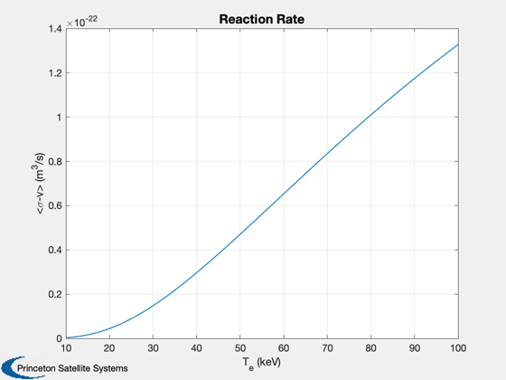
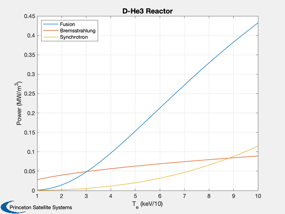
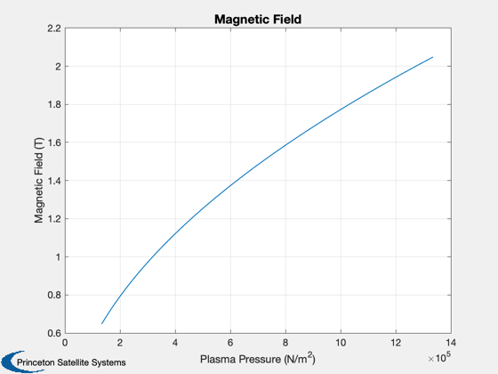

D-He3 fusion power and magnetic field from electron temperature
Demonstrates Bremsstrahlung, FusionPower, and Synchrotron, assuming ions and electrons are at the same temperature.
See also: SigmaV, Bremsstrahlung, FusionPower, Synchrotron, VolumeAveragedPressure, BField
-------------------------------------------------------------------------
Reference: Bingren, S., "Core Plasma Characteristics of a Spherical
% Torus Fusion Reactor", Plasma Science & Technology, Vol. % 7 No. 2 April 2005. % % ------------------------------------------------------------------------- %-------------------------------------------------------------------------- % Copyright (c) 2011 Princeton Satellite Systems, Inc. % All Rights Reserved %-------------------------------------------------------------------------- tE = logspace(1,2); r1 = 'D'; r2 = 'He3'; n1 = 1e20/3; n2 = 1e20/3; nI = [n1 n2]; zI = [1 2]; L = 2.5; % reactor dimension rW = 0.9; % wall reflectivity bT = 2.7; sV = SigmaV( r1, r2, tE); Plot2D(tE,sV,'T_e (keV)','<\sigma-v> (m^3/s)','Reaction Rate'); pB = Bremsstrahlung( nI, zI, tE ); pFus = FusionPower( n1, n2, r1, r2, tE ); pS = Synchrotron( nI, zI, bT, tE, L, rW ); Plot2D(tE/10,[pFus;pB;pS],'T_e (keV/10)','Power (MW/m^3)','D-He3 Reactor') legend('Fusion', 'Bremsstrahlung', 'Synchrotron','location','northwest') % Plot the field p = VolumeAveragedPressure(tE,nI,zI); BField( p, 0.8 ); %--------------------------------------  